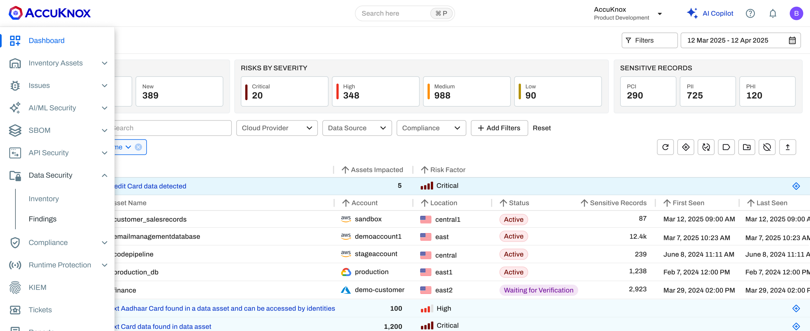
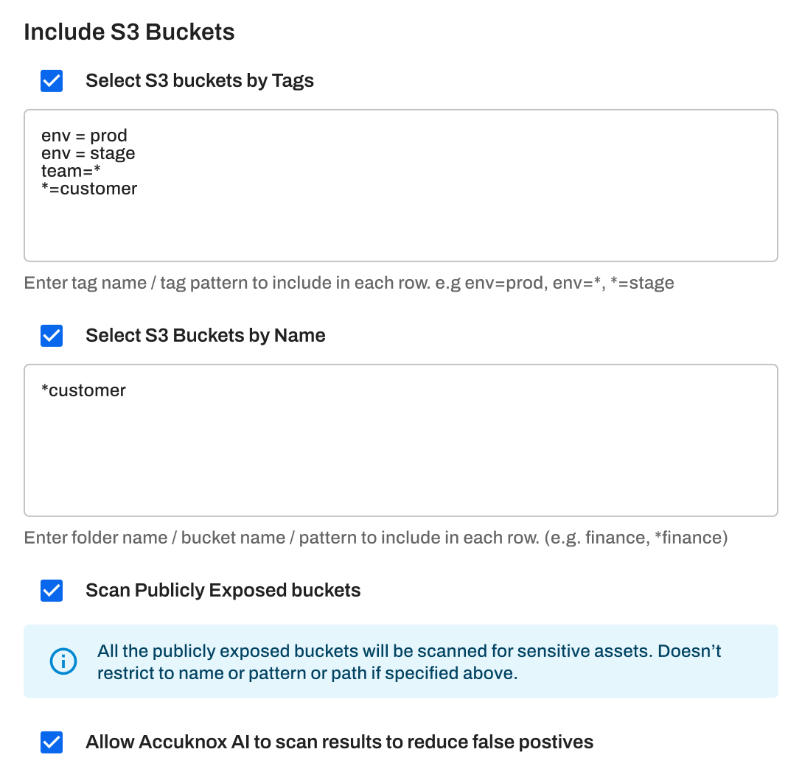
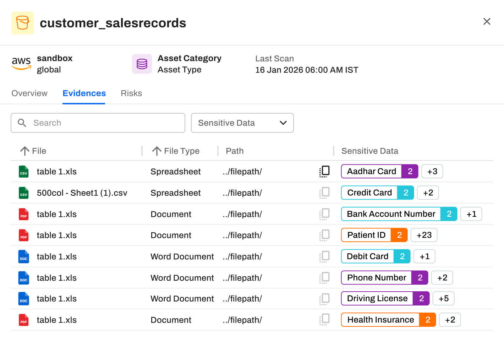
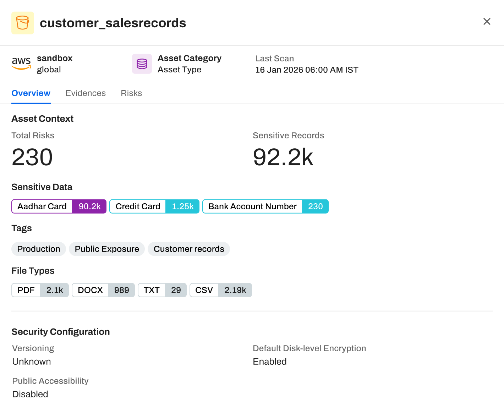
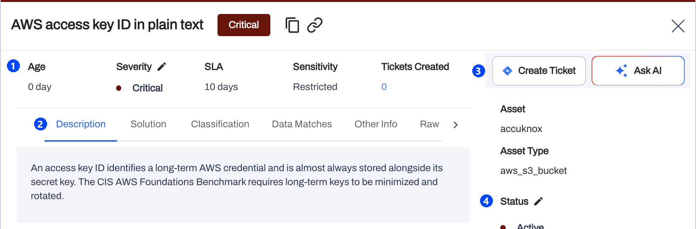
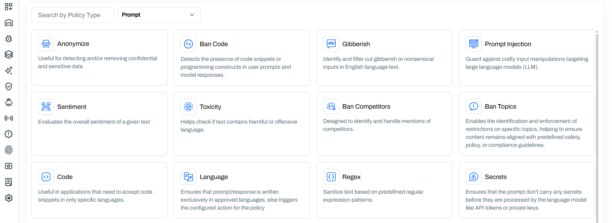
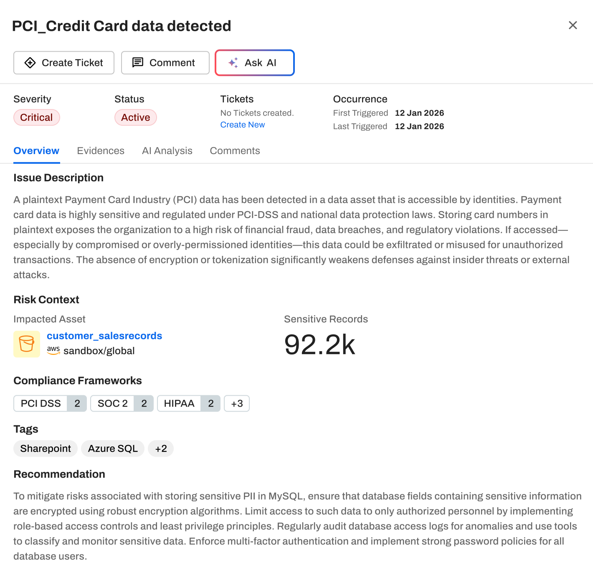

DSPM best practices cheat sheet
Find sensitive
data before
attackers do
The do's and don'ts for six data security practices, from the first scan to the audit, with the AccuKnox setup page for each gap.
The do's and don'ts for six data security practices, from the first scan to the audit, with the AccuKnox setup page for each gap.
More than half of cloud data is now sensitive, and most breached organizations had not encrypted it everywhere. Staff also feed that data into AI tools that security never approved.
of cloud data was classified as sensitive in 2025, up from 47% in 2024.
Thales, 2025 Cloud Security Study. cpl.thalesgroup.com
of breached organizations encrypt sensitive data both at rest and in transit.
IBM, Cost of a Data Breach 2026. newsroom.ibm.com
of security incidents involved workers using unapproved AI tools, more than double the year before.
IBM Cost of a Data Breach 2026, via Help Net Security. helpnetsecurity.com
Sources. 85 SaaS apps and 8%: Thales 2025 Cloud Security Study, press release and blog. 52% and $192: IBM Cost of a Data Breach 2026, via Network World. 247 days: IBM Cost of a Data Breach 2026, via Help Net Security.
Find each store, read what it holds, close the exposed ones, work the findings, guard AI prompts and report regulated data.

Data Security findings with sensitive records by PCI, PII and PHI. help.accuknox.com/getting-started/dspm-overview

Scope an S3 source. help.accuknox.com/getting-started/dspm-overview
Scope each S3 source by tag and name pattern, then scan every public bucket whatever its name.
The scanner runs as a VM or Kubernetes CronJob in your account. It reads a sample each night and sends one findings file per data store. Onboard the DSPM scanner

Evidence per file in one asset. help.accuknox.com/getting-started/dspm-overview
The scanner reads each file and row, then tags what it finds, such as Aadhaar, card and bank account numbers.
283 data classes cover PII, PHI, financial data, credentials and national IDs, each with a confidence tier. See what the scanner detects

Asset overview with security configuration. help.accuknox.com/getting-started/dspm-overview
Each asset shows its sensitive records beside its encryption and public access settings, so you fix the riskiest stores first.
DSPM shows which store holds the data. CSPM flags the public S3 bucket or the unencrypted volume behind it. Fix S3 public exposure
Each finding carries a severity, an SLA window and a sensitivity label, so the queue has an order before anyone reads it.

A Critical finding with SLA and sensitivity. help.accuknox.com/getting-started/dspm-onboarding
Ask AI explains a finding, and the Classification tab lists its CWE, MITRE ATT&CK and compliance mapping. Review DSPM findings
The Prompt Firewall sits inline between users and the LLM, and masks or blocks sensitive data in both directions.

Prompt Firewall policy types. help.accuknox.com/use-cases/prompt-firewall-overview
Every prompt and response passes the firewall, which blocks, sanitizes or monitors it and logs it for audit. Read the Prompt Firewall guide

A finding mapped to PCI DSS, SOC 2 and HIPAA. help.accuknox.com/getting-started/dspm-overview
282 of 283 data classes carry the regulation clauses they fall under, from GDPR and PCI DSS to HIPAA and India DPDP.
Frameworks include GDPR, UK GDPR, PCI DSS, HIPAA, CPRA, India DPDP, POPIA, PIPEDA and the NIST SP 800 series. See the compliance mapping
Read each row. Where the gap is true for you, take the first step this week.
| If this is true | AccuKnox capability | First step |
|---|---|---|
| Nobody can list every bucket, database and SaaS app that holds sensitive data | DSPM discovery | Onboard the scanner in each region and add each store as a source |
| Public buckets are never scanned for their content | Scan Publicly Exposed buckets | Check the option on every S3 source |
| Findings flag test data and public phone numbers | Confidence floor and allow list | Add known values to the allow list and switch off unused detectors |
| Sensitive records sit in public or unencrypted stores | DSPM with CSPM | Filter for public and unencrypted asset findings, then fix by record count |
| Staff paste customer data into AI tools | Prompt Firewall | Turn on Anonymize and Secrets in monitor mode |
| Auditors ask where regulated data lives | Compliance mapping | Filter findings by framework to list the assets that hold it |
Book a demo to watch DSPM scan a data store in its own region and rank the findings it returns.
Book a demo Read the DSPM docsdata classes, each with a confidence tier
country packs for national ID numbers
compliance framework groups
Featured in the KuppingerCole CNAPP Leadership Compass
Sources. accuknox.com/platform/dspm and accuknox.com/analyst-recognition